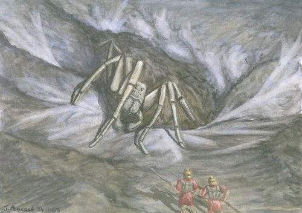

| Climate/Terrain | Colline e Montagne Temperate |
| Frequency | Rare |
| Organization | Solitary |
| Activity Cycle | Any |
| Diet | Carnivoro |
| Intelligence | Low Intelligence (5 - 7) 9 punti comb. |
| Treasure | Vedi Sotto (solo nella tana) |
| Alignment | Neutral Evil |
| No. Appearing | 1 |
| Armor Class | 3 |
| Movement | 18 |
| Hit Dice | 6 + 6 |
| Thac0 | 14 |
| No. of Attacks | 1 Morso |
| Damage / Attacks | 2d6 + 2 |
| Special Attacks | Veleno |
| Special Defenses | Mimetizzazione |
| Magic Resistance | Nessuna |
| Size | Huge (6 m. di diametro) |
| Morale | Champion (16) |
| XP value | 1250 |
Descrizione
La Tarantola Gigante delle Cave Rocciose è un pericoloso predatore che vive nelle colline o sulle montagne non civilizzate. E' un enorme ragno con uno spesso carapace del colore delle rocce.
Combat
La Tarantola Gigante delle Cave Rocciose non è in grado di tessere alcuna ragnatela ed è un ragno che vive in anfratti rocciosi abbastanza grandi da contenerlo. Questo ragno resta immobile mimetizzandosi fra le rocce ed aspettando che la sua preda si avvicini a distanza di attacco (mezzo movimento).
MIMETIZZAZIONE INFERIORE [ZONE ROCCIOSE (COLLINE, MONTAGNE E SOTTERRANEI)] (Lesser Special Ability): Quando la creatura resta ferma è capace di mimetizzarsi nell'ambiente indicato. In particolare, fino a che resta ferma costei non potrà essere notata dalle creature che passino ad una distanza superiore a 30 metri ed otterrà una possibilità pari al 65% di non essere notata dalle creature che le passano ad una distanza inferiore. Utilizzare quest'abilità richiede un'azione complessa dalla durata dell'intero round e la creatura potrà risultare, quindi, nascosta solo alla fine del round. Per restare nascosta la creatura non potrà compiere altre azioni complesse e non potrà spostarsi (si faccia eccezioni per piccoli movimenti effettuati sul posto). Si noti che questa abilità non può essere utilizzata nei confronti di chi ha già visto la creatura fino a che questa non esce dalla sua linea visiva. Si noti che il tiro percentuale è effettuato segretamente dalla creatura un'unica volta ed il suo risultato sarà applicato a qualsiasi soggetto fino a che costei non si sposti od agisca diversamente. Il risultato di questo tiro si considererà incrementato di una penalità del +10% al fine di verificare se la creatura si è nascosta nei confronti di soggetti dotati di Sensi Superiori o che posseggano la competenza Observation ed abbiano superato una prova nella stessa (+15% nei confronti delle creature che abbiano entrambe le caratteristiche). Il risultato del tiro si considererà incrementato di un'ulteriore penalità del +25% al fine di verificare se la creatura si è nascosta nei confronti di soggetti dotati di infravisione (che sia attiva e sempre che la creatura si trovi all'interno del suo raggio). Qualora la creatura risulti nascosta con successo alla vista dei suoi avversari ed agisca improvvisamente costei imporrà loro una penalità di -3 alla relativa prova sulla sorpresa.
Il ragno attacca con il
suo potente morso e quando colpisce inietta un veleno stordente:
Veleno Insinuativo, Onset
1 round, Mod. Tiro Salvezza -1, Effetti None / La vittima resta incapacitata per
1 turno, Assuefazione 1 giorno.
La Tarantola Gigante delle Cave Rocciose è dotata sia di una vista normale che di una infravisione che la rende capace di individuare le sue vittime fino a 30 metri di distanza anche nel buio assoluto.
Habitat/Society
La Tarantola Gigante delle Cave Rocciose è una creatura solitaria che una volta adulta vive in anfratti rocciosi di colline e montagne. E' un mostro territoriale che difficilmente lascia la sua tana una volta stabilitosi in una zona. Una volta uccisa la sua vittima la trasporta all'interno della sua tana per cibarsene con tranquillità. Si tratta di una creatura particolarmente intelligente e malvagia che attacca per uccidere chi entra nel suo raggio di azione anche se non affamata.
Ecology
La Tarantola Gigante delle Cave Rocciose è un grosso predatore che si ciba di creature di dimensioni anche large come cavalli e bovini. Data la sua intelligenza è in grado di discernere i nemici in base alla loro pericolosità e di cambiare bersaglio se necessario. Se attaccato da più creature, una volta resosi conto che il suo veleno ha avuto effetto su una vittima non esita ad attaccarne una diversa per avvelenare ed indebolire anche lei.
Un buono skinner è in grado (superando una prova con -2 di penalità) di reperire dal cadavere di uno di questi ragni pezzi di carapace con i quali un armaiolo (special armorer) potrebbe riuscire a costruire una corazza di tarantola gigante, tali pezzi hanno un valore di mercato di circa 100 monete d'oro.
Tesoro
|
Tipo di tesoro |
All'interno della tana della Tarantola Gigante delle Cave Rocciose |
| Copper | none |
| Silver | none |
| Gold | none |
| Platinum | none |
| Gems | 1d8 (25%) |
| Art Ojects | 1d3 (20%) |
| Magical Items | 1d2 (15%) |